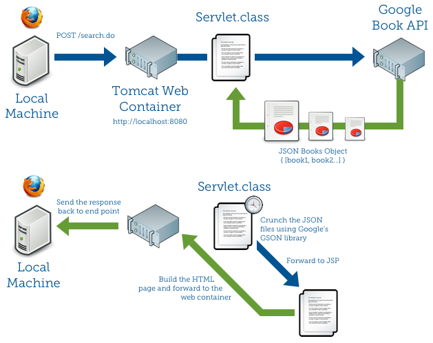

Valid username and password combos are: charles/charles admin/admin
This is a simple SOEN387 Java Servlet and JSP demonstration. Since this course overall is about enterprise web application, I thought it would be interesting to consume another web service rather than build a local XML flat files for storage of book information. However, note that the user database is still located in a flat file. Note that I have chosen to use YAML rather than XML to store the user information. As I prefer the simplicity of YAML, and don't like the overly verbose XML.
Below graphically depict how the information are send throughout my web application. Note that I have not drew the cookies storage.

I have used the following libraries:
ROOT in Tomcat.